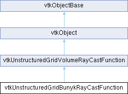

|
Etrek
|
|
Etrek
|
a superclass for ray casting functions More...
#include <vtkUnstructuredGridBunykRayCastFunction.h>

Classes | |
| class | Triangle |
| class | Intersection |
Public Member Functions | |
| vtkTypeMacro (vtkUnstructuredGridBunykRayCastFunction, vtkUnstructuredGridVolumeRayCastFunction) | |
| void | PrintSelf (ostream &os, vtkIndent indent) override |
| void | Initialize (vtkRenderer *ren, vtkVolume *vol) override |
| void | Finalize () override |
| VTK_NEWINSTANCE vtkUnstructuredGridVolumeRayCastIterator * | NewIterator () override |
| int | InTriangle (double x, double y, Triangle *triPtr) |
| double * | GetPoints () |
| Triangle ** | GetTetraTriangles () |
| Intersection * | GetIntersectionList (int x, int y) |
| vtkGetObjectMacro (ViewToWorldMatrix, vtkMatrix4x4) | |
| vtkGetVectorMacro (ImageOrigin, int, 2) | |
| vtkGetVectorMacro (ImageViewportSize, int, 2) | |
| Public Member Functions inherited from vtkUnstructuredGridVolumeRayCastFunction | |
| vtkTypeMacro (vtkUnstructuredGridVolumeRayCastFunction, vtkObject) | |
| void | PrintSelf (ostream &os, vtkIndent indent) override |
| Public Member Functions inherited from vtkObject | |
| vtkBaseTypeMacro (vtkObject, vtkObjectBase) | |
| virtual void | DebugOn () |
| virtual void | DebugOff () |
| bool | GetDebug () |
| void | SetDebug (bool debugFlag) |
| virtual void | Modified () |
| virtual vtkMTimeType | GetMTime () |
| void | RemoveObserver (unsigned long tag) |
| void | RemoveObservers (unsigned long event) |
| void | RemoveObservers (const char *event) |
| void | RemoveAllObservers () |
| vtkTypeBool | HasObserver (unsigned long event) |
| vtkTypeBool | HasObserver (const char *event) |
| vtkTypeBool | InvokeEvent (unsigned long event) |
| vtkTypeBool | InvokeEvent (const char *event) |
| std::string | GetObjectDescription () const override |
| unsigned long | AddObserver (unsigned long event, vtkCommand *, float priority=0.0f) |
| unsigned long | AddObserver (const char *event, vtkCommand *, float priority=0.0f) |
| vtkCommand * | GetCommand (unsigned long tag) |
| void | RemoveObserver (vtkCommand *) |
| void | RemoveObservers (unsigned long event, vtkCommand *) |
| void | RemoveObservers (const char *event, vtkCommand *) |
| vtkTypeBool | HasObserver (unsigned long event, vtkCommand *) |
| vtkTypeBool | HasObserver (const char *event, vtkCommand *) |
| template<class U, class T> | |
| unsigned long | AddObserver (unsigned long event, U observer, void(T::*callback)(), float priority=0.0f) |
| template<class U, class T> | |
| unsigned long | AddObserver (unsigned long event, U observer, void(T::*callback)(vtkObject *, unsigned long, void *), float priority=0.0f) |
| template<class U, class T> | |
| unsigned long | AddObserver (unsigned long event, U observer, bool(T::*callback)(vtkObject *, unsigned long, void *), float priority=0.0f) |
| vtkTypeBool | InvokeEvent (unsigned long event, void *callData) |
| vtkTypeBool | InvokeEvent (const char *event, void *callData) |
| virtual void | SetObjectName (const std::string &objectName) |
| virtual std::string | GetObjectName () const |
| Public Member Functions inherited from vtkObjectBase | |
| const char * | GetClassName () const |
| virtual vtkTypeBool | IsA (const char *name) |
| virtual vtkIdType | GetNumberOfGenerationsFromBase (const char *name) |
| virtual void | Delete () |
| virtual void | FastDelete () |
| void | InitializeObjectBase () |
| void | Print (ostream &os) |
| void | Register (vtkObjectBase *o) |
| virtual void | UnRegister (vtkObjectBase *o) |
| int | GetReferenceCount () |
| void | SetReferenceCount (int) |
| bool | GetIsInMemkind () const |
| virtual void | PrintHeader (ostream &os, vtkIndent indent) |
| virtual void | PrintTrailer (ostream &os, vtkIndent indent) |
| virtual bool | UsesGarbageCollector () const |
Static Public Member Functions | |
| static vtkUnstructuredGridBunykRayCastFunction * | New () |
| Static Public Member Functions inherited from vtkObject | |
| static vtkObject * | New () |
| static void | BreakOnError () |
| static void | SetGlobalWarningDisplay (vtkTypeBool val) |
| static void | GlobalWarningDisplayOn () |
| static void | GlobalWarningDisplayOff () |
| static vtkTypeBool | GetGlobalWarningDisplay () |
| Static Public Member Functions inherited from vtkObjectBase | |
| static vtkTypeBool | IsTypeOf (const char *name) |
| static vtkIdType | GetNumberOfGenerationsFromBaseType (const char *name) |
| static vtkObjectBase * | New () |
| static void | SetMemkindDirectory (const char *directoryname) |
| static bool | GetUsingMemkind () |
Protected Member Functions | |
| int | IsTriangleFrontFacing (Triangle *triPtr, vtkIdType tetraIndex) |
| void | ClearImage () |
| void * | NewIntersection () |
| int | CheckValidity (vtkRenderer *ren, vtkVolume *vol) |
| void | TransformPoints () |
| void | UpdateTriangleList () |
| void | ComputeViewDependentInfo () |
| void | ComputePixelIntersections () |
| Protected Member Functions inherited from vtkObject | |
| void | RegisterInternal (vtkObjectBase *, vtkTypeBool check) override |
| void | UnRegisterInternal (vtkObjectBase *, vtkTypeBool check) override |
| void | InternalGrabFocus (vtkCommand *mouseEvents, vtkCommand *keypressEvents=nullptr) |
| void | InternalReleaseFocus () |
| Protected Member Functions inherited from vtkObjectBase | |
| virtual void | ReportReferences (vtkGarbageCollector *) |
| vtkObjectBase (const vtkObjectBase &) | |
| void | operator= (const vtkObjectBase &) |
Protected Attributes | |
| vtkRenderer * | Renderer |
| vtkVolume * | Volume |
| vtkUnstructuredGridVolumeRayCastMapper * | Mapper |
| int | Valid |
| int | NumberOfPoints |
| double * | Points |
| vtkMatrix4x4 * | ViewToWorldMatrix |
| Intersection ** | Image |
| int | ImageSize [2] |
| int | ImageOrigin [2] |
| int | ImageViewportSize [2] |
| vtkUnstructuredGridBase * | SavedTriangleListInput |
| vtkTimeStamp | SavedTriangleListMTime |
| Triangle ** | TetraTriangles |
| vtkIdType | TetraTrianglesSize |
| Triangle * | TriangleList |
| Intersection * | IntersectionBuffer [VTK_BUNYKRCF_MAX_ARRAYS] |
| int | IntersectionBufferCount [VTK_BUNYKRCF_MAX_ARRAYS] |
| Protected Attributes inherited from vtkObject | |
| bool | Debug |
| vtkTimeStamp | MTime |
| vtkSubjectHelper * | SubjectHelper |
| std::string | ObjectName |
| Protected Attributes inherited from vtkObjectBase | |
| std::atomic< int32_t > | ReferenceCount |
| vtkWeakPointerBase ** | WeakPointers |
Additional Inherited Members | |
| Static Protected Member Functions inherited from vtkObjectBase | |
| static vtkMallocingFunction | GetCurrentMallocFunction () |
| static vtkReallocingFunction | GetCurrentReallocFunction () |
| static vtkFreeingFunction | GetCurrentFreeFunction () |
| static vtkFreeingFunction | GetAlternateFreeFunction () |
a superclass for ray casting functions
vtkUnstructuredGridBunykRayCastFunction is a concrete implementation of a ray cast function for unstructured grid data. This class was based on the paper "Simple, Fast, Robust Ray Casting of Irregular Grids" by Paul Bunyk, Arie Kaufmna, and Claudio Silva. This method is quite memory intensive (with extra explicit copies of the data) and therefore should not be used for very large data. This method assumes that the input data is composed entirely of tetras - use vtkDataSetTriangleFilter before setting the input on the mapper.
The basic idea of this method is as follows:
1) Enumerate the triangles. At each triangle have space for some information that will be used during rendering. This includes which tetra the triangles belong to, the plane equation and the Barycentric coefficients.
2) Keep a reference to all four triangles for each tetra.
3) At the beginning of each render, do the precomputation. This includes creating an array of transformed points (in view coordinates) and computing the view dependent info per triangle (plane equations and barycentric coords in view space)
4) Find all front facing boundary triangles (a triangle is on the boundary if it belongs to only one tetra). For each triangle, find all pixels in the image that intersect the triangle, and add this to the sorted (by depth) intersection list at each pixel.
5) For each ray cast, traverse the intersection list. At each intersection, accumulate opacity and color contribution per tetra along the ray until you reach an exiting triangle (on the boundary).
|
overridevirtual |
Called by the ray cast mapper at the end of rendering
Implements vtkUnstructuredGridVolumeRayCastFunction.
|
inline |
Access to an internal structure for the templated method.
|
inline |
Access to an internal structure for the templated method.
|
inline |
Access to an internal structure for the templated method.
|
overridevirtual |
Called by the ray cast mapper at the start of rendering
Implements vtkUnstructuredGridVolumeRayCastFunction.
| int vtkUnstructuredGridBunykRayCastFunction::InTriangle | ( | double | x, |
| double | y, | ||
| Triangle * | triPtr ) |
Is the point x, y, in the given triangle? Public for access from the templated function.
|
overridevirtual |
Returns a new object that will iterate over all the intersections of a ray with the cells of the input. The calling code is responsible for deleting the returned object.
Implements vtkUnstructuredGridVolumeRayCastFunction.
|
overridevirtual |
| vtkUnstructuredGridBunykRayCastFunction::vtkGetObjectMacro | ( | ViewToWorldMatrix | , |
| vtkMatrix4x4 | ) |
Access to an internal structure for the templated method.
| vtkUnstructuredGridBunykRayCastFunction::vtkGetVectorMacro | ( | ImageOrigin | , |
| int | , | ||
| 2 | ) |
Access to an internal structure for the templated method.
| vtkUnstructuredGridBunykRayCastFunction::vtkGetVectorMacro | ( | ImageViewportSize | , |
| int | , | ||
| 2 | ) |
Access to an internal structure for the templated method.